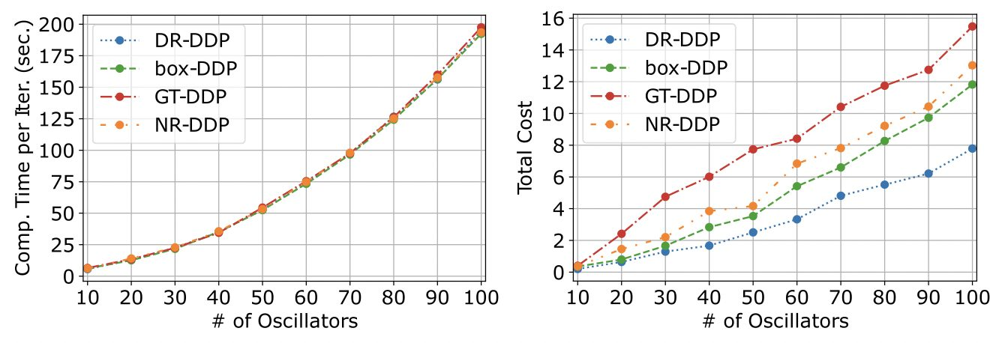
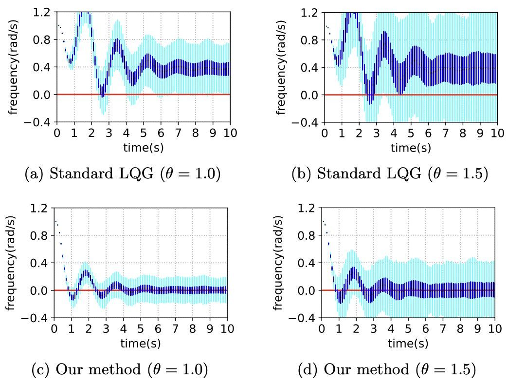
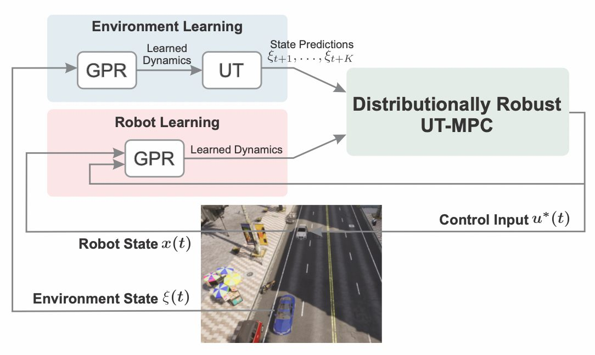

[NeurIPS] Analysis of ODE models for accelerated methods via positive semidefinite kernels
The paper “Convergence analysis of ODE models for accelerated first-order methods via positive semidefinite kernels,” co-authored by Jungbin Kim, has been accepted to Advances in Neural Information Processing Systems (NeurIPS) ...

[CDC] 3 papers
The following three papers from our group have been accepted for presentation at the 62nd IEEE Conference on Decision and Control (CDC). Distributionally robust differential dynamic programming with Wasserstein distance by Astghik Hakobyan, and Insoon Yang ...

[ICML (Oral)] Unifying Nesterov’s AGM for convex and strongly convex objective functions
The paper "Unifying Nesterov’s accelerated gradient methods for convex and strongly convex objective functions" has been accepted for Oral presentation at the 40th International Conference on Machine Learning (ICML). Unifying Nesterov’s accelerated gradient methods for convex ...

[SICON] Wasserstein linear quadratic control
The paper "Distributional robustness in minimax linear quadratic control with Wasserstein distance" has been published in the SIAM Journal on Control and Optimization. Distributional robustness in minimax linear quadratic control with Wasserstein distance by Kihyun Kim, ...

[ICRA] Distributionally robust optimization with unscented transform for learning-based control
The paper "Distributionally Robust Optimization with Unscented Transform for Learning-Based Motion Control in Dynamic Environments" has been accepted for presentation at the 2023 IEEE International Conference on Robotics and Automation (ICRA). Distributionally Robust Optimization with Unscented ...